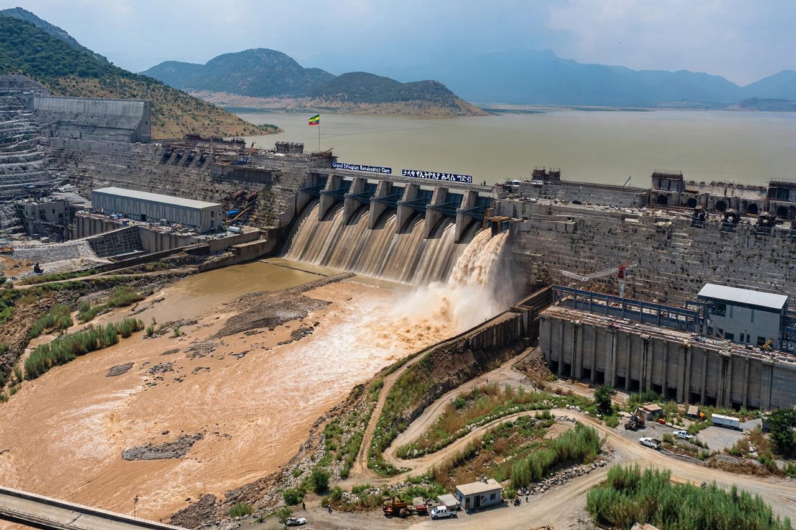

Hydroelectric dam on the Blue Nile, Ethiopia
| Grand Ethiopian Renaissance Dam | |
|---|---|
 The GERD across the Blue Nile near the Sudanese border | |
| Location | Benishangul-Gumuz Region, Ethiopia, near the Sudan border |
| River | Blue Nile |
| Construction began | 2011 |
| Installed capacity | About 5,150 MW (planned) |
| Status | Reservoir filling began 2020; turbines generating from 2022; inaugurated September 2025 |
The Grand Ethiopian Renaissance Dam (GERD) is a gravity dam on the Blue Nile River in Ethiopia, in the Benishangul-Gumuz Region about 45 km east of the border with Sudan. With a planned installed capacity of roughly 5,150 megawatts, it is the largest hydroelectric power plant in Africa and one of the largest in the world. Construction by the Italian company Webuild (formerly Salini Impregilo) began in 2011, largely financed by Ethiopian public bonds and domestic contributions.
The dam is a roller-compacted concrete gravity structure about 145 metres high and 1.8 km long, impounding a reservoir of some 74 billion cubic metres. Ethiopia, where roughly half the population lacked electricity access when the project began, intends the dam to transform its economy, supply power domestically, and earn export revenue from neighbouring countries.
The project has been the focus of a long-running dispute with downstream Egypt and Sudan. Egypt, which depends on the Nile for nearly all its freshwater and claims historic rights under colonial-era agreements Ethiopia rejects, fears reduced flows; Sudan's position has shifted with its circumstances. Years of African Union–mediated and other negotiations failed to produce a binding agreement on filling and operation before Ethiopia began phased reservoir filling in 2020. Ethiopia's first turbines began generating power in February 2022, and the dam was inaugurated in September 2025.
The GERD is a potent symbol of national pride and self-reliant development in Ethiopia, while remaining one of the most contentious water disputes in international politics.